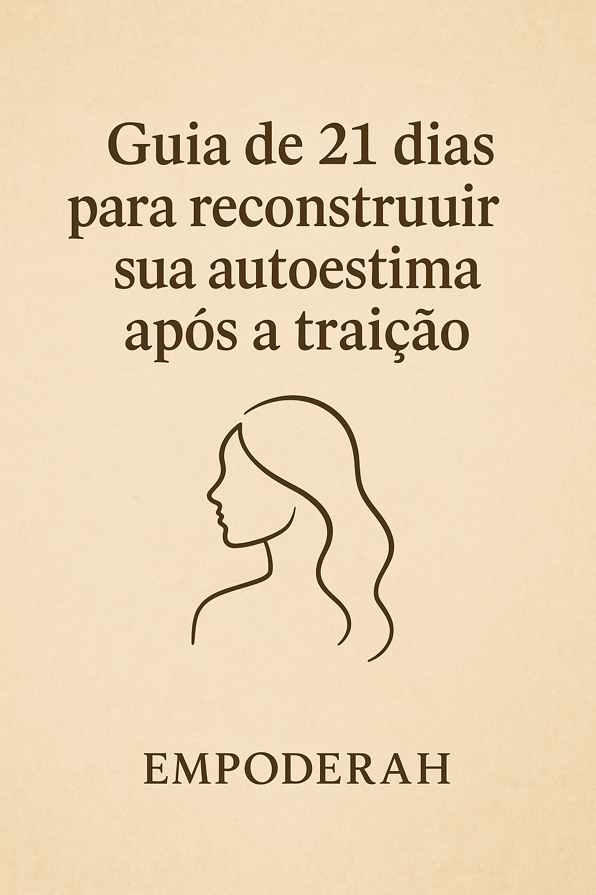

A Cura Após a Traição
Um guia direto, emocional e transformador para mulheres que foram traídas e querem recuperar a autoestima, a dignidade e o controle da própria vida.
Transforme sua dor em força. Recupere seu poder. Brilhe novamente.
O Que Você Vai Aprender
Um método completo e transformador que vai te guiar passo a passo na sua jornada de cura
Técnicas de Cura Emocional
Métodos comprovados para processar a dor e transformá-la em força interior
Reconstrução da Autoestima
Estratégias para recuperar sua confiança e valor próprio após a traição
Plano de Ação Personalizado
Um roteiro claro e objetivo para sua jornada de transformação pessoal
Exercícios Práticos
Atividades diárias que vão acelerar seu processo de cura e crescimento
Oferta Especial de Lançamento

De kz5400,00
kz4 800,00
Pagamento único - Acesso imediato
- ✅ eBook completo “TRAÍDA, MAS INQUEBRÁVEL”
- ✅ Acesso vitalício ao conteúdo
- ✅ Garantia de 7 dias
Este eBook é Para Você…
“Passei por um momento muito difícil depois da traição. Esse eBook me ajudou a entender melhor meus sentimentos e me deu clareza para seguir em frente com mais confiança.”
– Maria S.
Outras opções para sua jornada de cura
📘 Checklist da Reconstrução
Checklist prática em PDF com 7 passos essenciais para se reerguer após uma traição. Simples, direta e fácil de aplicar ideal para quem precisa sair da dor e retomar o controle emocional com clareza e autoestima. Use no celular ou imprima.
kz1400,00
Quero este📚 Diário de 21 dias para reconstruir sua autoestima e se libertar da dor
📖 Guia de 21 dias para reconstruir sua autoestima após a traição ✍️ Exercícios diários e reflexões profundas. Imprima para melhor proveito.
De kz6500,00
kz5850,00
Quero este